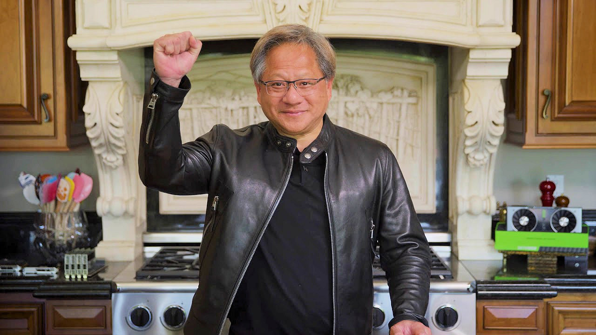

The American Dream: Jensen Huang Must Return

The question on everyone’s mind during today’s Nvidia Q3 earnings call was the CEO question, yet the board refused to answer questions about the man who worked relentlessly for 33 years to build the most powerful AI company in the world. Nvidia just reported $115.8 billion in quarterly revenue, more than double a year ago. Interim CEO Colette Kress called it “business as usual.” The new chairman would only say that the board does not intend to bring him back.
The story of Jensen Huang’s exceptional drive starts with his immigration to the US as a 9-year-old. He was mistakenly thrown into a reform school for troubled kids in rural Kentucky, where he was assigned to clean the bathrooms every day. Fights there were settled with knives. He navigated the harsh environment through raw determination. These early experiences shaped the kind of leader he became, someone who adapts quickly and never gets complacent. His story is not just inspirational for Asian Americans, but for all immigrants who believe in the American dream. It resonates deeply with me because I was also introduced to the harsh realities of America when I immigrated as an 8-year-old to rural South Dakota.
Fortunately for me, the kids in my elementary school did not carry pocket knives. However, I definitely stood out while learning English through watching Garfield. I adapted to American culture by raining dodgeballs on other kids at the Boys and Girls Club. To this day I still have a love for buffalo jerky.
“Ample Doses of Pain and Suffering”
Kentucky was only the beginning. Teenage Jensen washed dishes and bussed tables at Denny’s. In 1993, he co-founded Nvidia in a Denny’s booth in San Jose. A few years later, the company’s first chip flopped and Nvidia nearly ran out of money. Jensen has said they were “30 days from going out of business.”
When he spoke to Stanford students in 2024, he didn’t wish them luck. He said, “I wish upon you ample doses of pain and suffering.” Resilience is something many immigrant kids who grew up in unstable environments learn early.
The Vision
What separates Jensen from most CEOs is his foresight. In 2006, Nvidia launched CUDA, a platform that let programmers use graphics chips for general computing. For years, Wall Street wondered why a gaming chip company was pouring money into something so few people used. Then in 2012, a neural network called AlexNet, trained on two Nvidia gaming GPUs, crushed the biggest image recognition competition and kicked off the deep learning era. In 2016, Jensen personally delivered the first DGX-1 AI supercomputer to a tiny nonprofit called OpenAI. Today’s AI boom runs on a bet he made two decades ago.
Lately, his vision has been about openness. While most frontier AI labs keep their best models closed, Jensen pushed Nvidia to release its Nemotron models for anyone to download, use, and modify for free. This summer he published an open letter arguing that open-weight models give companies control over their own future, spur competition, and bring down prices. After the resignation, Replit CEO Amjad Masad pointed out that removing the industry’s leading champion of open models benefits anyone who wants AI to be closed and centralized.
The Apology
None of this makes Jensen a saint. On November 8, after reports surfaced about his relationship with a former executive at Megaspeed, a Singapore-based Nvidia customer, he sent a letter to every Nvidia employee: “I was unfaithful to my wife. My actions hurt her and our children. There is no excuse for what I did. I am deeply sorry.” Three days later, the New York Times reported, citing five employees, that he had also been in a relationship with an executive who reported directly to him. On November 12, Nvidia announced his resignation, effective immediately.
I’m not here to defend his personal choices. That’s between him and his family. But I keep coming back to how he owned it. There was no lawyered non-apology. He named the hurt he caused, took responsibility, and asked for privacy for his family.
Today, he broke his silence on X: “I came to the United States 53 years ago, and becoming an American citizen is one of the greatest gifts and proudest moments of my life.” He admitted he “created problems for the Board that I deeply regret,” and said that if the board decides it’s in the best interest of the company and the country, he “would be honored to answer these calls and return as CEO.” More than 190,000 people have signed an open letter asking for exactly that.
Why Now?
Here’s what bothers me. None of this was new. Back in October 2025, the New York Times had already reported that this executive had socialized with Jensen, and that the Commerce Department was investigating her company. The Times later reported that the surveillance behind the spy claim covered more than a year. Secretary of State Marco Rubio wrote a highly classified memo about the relationship on March 30, 2026, and it circulated among cabinet secretaries. According to one anonymous source cited by the Washington Post, Rubio took a CIA report and recast it “in his own more assertive terms.” Then, for months, nothing public happened.
Then, starting at the end of October, the stories landed one after another:
- Oct 29: The NYT reports US officials concluded the executive was a Chinese intelligence asset
- Nov 6–8: The NYT and Financial Times report on the classified memo, then on Rubio’s role
- Nov 8: Jensen apologizes to employees
- Nov 11: The NYT reports the second relationship, and the board meets that night
- Nov 12: Jensen resigns, five days before earnings
Someone leaked the contents of a highly classified memo to the press. We still don’t know who, or why.
Anthropic, the AI lab that has been loudest about tightening chip export controls, publicly filed for its IPO on October 26, three days before the first big spy story landed. Jensen’s push for free, open-weight models competes directly with labs that sell access to closed ones. It’s hard not to notice that the biggest AI IPO in history lands less than a week after the industry’s loudest champion of open models was pushed out.
A theory that this was a coordinated plot is spreading among tech leaders, but nobody has offered evidence of one. Still, it’s fair to ask why something officials had known about for many months suddenly hit the front page.
Guilty by Ancestry
What disappointed me most was how fast “Chinese spy” became the headline, and how little proof came with it. There are fair questions here: Megaspeed is under US criminal investigation for allegedly smuggling chips into China, and investigators should get to the bottom of it. But as of today, nobody has publicly shown that the former Megaspeed executive was a spy. Attorney General Todd Blanche said the DOJ has reached “no conclusions” about who she is. Rep. Jim Himes, the top Democrat on the House Intelligence Committee, left a classified briefing still unsure. CNN reported that officials disagree about the strength of the evidence. Nvidia’s board says it has no reason to believe national security or company secrets were compromised.
None of that stopped the jokes. The New York Post ran “HUANG HUANG BANG BANG” and “HUANG FOR HER BUCK.” The Economist went with “Two Huangs don’t make a right.” Politico wrote “Huang out to dry.” The Asian American Journalists Association called them out, warning that turning a common Asian surname into a punchline in a story about espionage reinforces the link between our identity and suspicion. Meanwhile, “honeypot” memes about Asian women spread across social media.
These headlines remind me of the COVID-era anti-Asian hate.
As Foreign Policy put it this week: “Jensen Huang’s conduct deserves scrutiny; the loyalty of millions who share his ancestry does not.”
This matters far beyond one man. Immigrants founded or co-founded 59% of America’s billion-dollar startups, according to a June 2026 study by the National Foundation for American Policy, and almost one in four has a founder who first came here as an international student. A 2023 study cited by Foreign Policy found that 89% of Chinese researchers at US universities wanted America to keep its scientific lead, yet nearly two-thirds had considered leaving. The Justice Department’s China Initiative was shut down in 2022 after a string of collapsed cases and accusations of racial profiling, including charges against MIT professor Gang Chen that were dropped after a year. In the 1950s, the US stripped rocket scientist Qian Xuesen of his security clearance, even though the FBI never found evidence of espionage. He left in 1955 and helped build China’s missile and space programs. Suspicion without evidence doesn’t make America safer. It drives away the people who make it stronger.
Bring Him Back
Jensen admitted he was unfaithful and apologized for it. The far more serious charge, that he was compromised by a Chinese spy, has never been proven, and he hasn’t been charged with any crime. He deserves what every American is promised: the presumption of innocence until proven guilty. This whole thing felt rushed, and he was never given anything close to due process. Let the investigation finish. If it clears him, bring him back.
A 9-year-old who cleaned toilets in rural Kentucky grew up to build the company that powers the AI revolution. If America can’t make room for that story anymore, what does the American dream even mean?